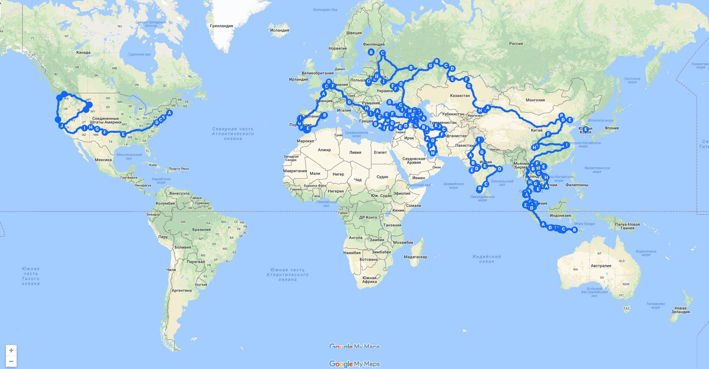
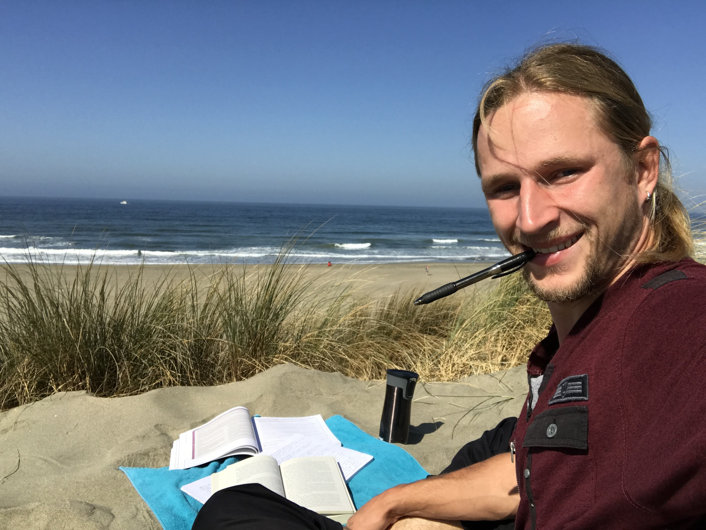

In 2015, my desire for exploration set me on a 2.5-year backpacking journey around the world. Armed with only the cheapest backpack, $300, and an unbounded enthusiasm for new discoveries, I covered over 50,000 miles by hitchhiking and ventured to some of the most remote and unseen places on the planet. The more secluded and authentic the destination, the more I loved it!

During this journey, I also discovered the wonderful world of volunteering. From teaching kids in disadvantaged regions and distributing meals to refugees, to clearing polluted natural areas and helping at animal rehabilitation centers — the variety of experiences volunteering provided turned out to be incredible.

I started riding horses when I was a kid. During my travels, I volunteered at various horse facilities and expanded my knowledge in equine care, rehabilitation, and training.
I worked with a diverse set of animals — from preparing younglings to be reliable companions, to rebuilding trust with previously abused rescued animals, to training horses for movie roles. However, one of the most rewarding experiences was providing lessons and equine therapy to children with special needs. It is amazing how these wonderful animals can positively impact our lives by simply being around.
My personal favorite activities are horseback archery and long-distance trail riding.

I loved playing with construction kits since I was a kid. In my teenage years, I had a lot of fun hacking video games and tinkering with hardware.
Unfortunately, various life circumstances led to my poor performance at school. After graduation and mandatory military service, I became a semi-truck driver and spent some years driving across the vast lands of Russia. At that time, no one, including myself, believed I could continue my education and pursue an engineering career.
Everything changed when my travels brought me to the U.S., where I sought asylum. I discovered that it is very possible for someone like me to go to community college and eventually earn a Bachelor's degree. My English was so poor that I struggled to order a sandwich at Subway, and my math skills were at a fifth-grade level.
I realized that it would take too much time to bring my math to the college level by taking classes, so I decided to study on my own. My searches brought me to Khan Academy — a free educational resource where I spent countless hours studying between pizza deliveries and driving for Uber.
My hard work paid off! I passed placement exams and was accepted to City College of San Francisco, where in 3.5 years I completed my Associate's degree in Computer Science. I decided that this time I wouldn't screw it up, so I studied hard and kept my GPA spotless.
When it was time to transfer to a 4-year university, to my disbelief, I got accepted to almost all the schools to which I applied. I picked UC Berkeley for having one of the strongest Computer Science programs.
Classes at Berkeley were hard but rewarding. I also received a scholarship that allowed me to reduce my work hours and focus on studies. In May 2024, I graduated with a strong GPA of 3.8.
This is a brief story of how hard work (and some luck, of course) paved the road to a dream. Now I'm looking forward to using my skills to bring a meaningful impact to the world!